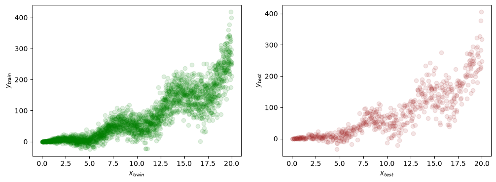
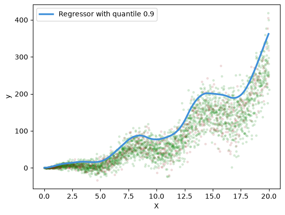
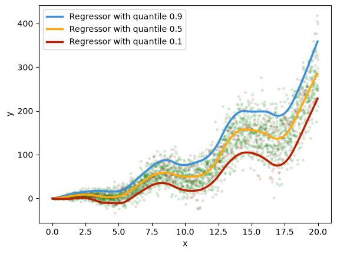

[playground] Keras & Scikit-Learn - Quantile Regression
Implement quantile regression with keras & scikit-learn
Informed decision-making is the cornerstone of effective business. Quantile regression is a technique for estimating the conditional quantiles of the response variable across values of the predictor variables, which is a powerful tool for making actionable insights.
Application of Quantile Regression:
- Based on distance (and other predictor variables), estimates delivery time (quantile) that covers (percentile)% on-time deliveries. Case study: Instacart
In this tutorial, we will fit a quantile regression model with Keras (minimize quantile loss function), integrate it with the Scikit-Learn library.
Config
Import
import numpy as np
import pandas as pd
import matplotlib.pyplot as plt
import sklearn
from sklearn.model_selection import (
train_test_split,
GridSearchCV,
RandomizedSearchCV,
KFold,
StratifiedKFold,
)
from sklearn.preprocessing import (
KBinsDiscretizer,
SplineTransformer,
RobustScaler,
QuantileTransformer,
PolynomialFeatures,
)
from sklearn.kernel_approximation import Nystroem
from sklearn.pipeline import Pipeline
from sklearn.compose import ColumnTransformer
from sklearn.metrics import mean_pinball_loss, make_scorer
from sklearn.base import RegressorMixin, BaseEstimator
import json
import shutilKeras: 3.14.1
Scikit-Learn: 1.8.0Keras Quantile Regressor
class KerasQuantileRegressor(RegressorMixin, BaseEstimator):
def __init__(
self, alpha=0.95, optimizer="rmsprop",
activation="relu", residual_size_block=64
):
super(KerasQuantileRegressor, self).__init__()
self.alpha = alpha
self.model = None
self.optimizer = optimizer
self.activation = activation
self.residual_size_block = residual_size_block
self.keras_model_type = "regression"
def __get_model(self, x_shape):
input_layer = Input(shape=(x_shape[1],))
n_res = self.residual_size_block
activation = self.activation
x_1 = Dense(n_res, activation=activation)(input_layer)
x_2 = Dense(n_res, activation=activation)(x_1)
add_layer = Add()([x_1, x_2])
output_layer = Dense(1)(add_layer)
model = Model(inputs=input_layer, outputs=output_layer)
return model
def __get_quantile_loss_func(self, q):
@keras.saving.register_keras_serializable(
package="quantilereg", name="quantile_loss_func"
)
def quantile_loss_func(y_true, y_pred):
e = y_true - y_pred
return keras.ops.mean(keras.ops.maximum(q * e, (q - 1) * e))
return quantile_loss_func
def __validate_datashape(self, x_shape, y_shape):
"""Hmmmm"""
assert (
len(x_shape) == 2 and len(y_shape) == 2 and y_shape[1] == 1
), "Rewrite self.__get_model bro,"
def fit(self, X, y, **param):
"""
Fit model with additional params
"""
self.__validate_datashape(X.shape, y.shape)
self.model = self.__get_model(X.shape)
self.model.compile(
optimizer=self.optimizer,
loss=self.__get_quantile_loss_func(self.alpha)
)
callbacks = None
patience = param.get("patience")
if param.get("patience"):
callbacks = [EarlyStopping(monitor="loss", patience=patience)]
del param["patience"]
self.model.fit(X, y, callbacks=callbacks, **param)
self.is_fitted_ = True
return self
def predict(self, X):
"""
Predict
"""
return self.model.predict(X, verbose=0)
def save_model(self, file_path):
assert self.is_fitted_
self.model.save(file_path)
params = self.get_params()
path_json_param = os.path.join(f"{file_path}_config_param.json")
with open(path_json_param, mode="wt") as file:
json.dump(params, file)
@classmethod
def load_model(cls, file_path):
keras_model = KerasQuantileRegressor()
path_json_param = os.path.join(f"{file_path}_config_param.json")
with open(path_json_param, mode="rt") as file:
params = json.load(file)
keras_model.set_params(**params)
loss_fn = keras_model.__get_quantile_loss_func(keras_model.alpha)
keras_model.model = keras.saving.load_model(
file_path,
custom_objects={
"quantile_loss_func": loss_fn
},
)
keras_model.is_fitted_ = True
return keras_modelMake synthetic data
def make_synthetic_data(n_samples):
X = np.linspace(0, 20, num=n_samples).reshape(-1, 1)
y = (X + np.sin(X) * 4 +
np.random.normal(size=X.shape, scale=4)).reshape(-1, 1)
y = y * np.linspace(0, 12, num=n_samples).reshape(-1, 1)
X_train, X_test, y_train, y_test = train_test_split(
X, y, test_size=0.2)
return (
X_train.reshape(-1, 1),
X_test.reshape(-1, 1),
y_train.reshape(-1, 1),
y_test.reshape(-1, 1),
)fig = plt.figure(figsize=(12, 4))
ax = fig.add_subplot(1, 2, 1)
ax.scatter(X_train, y_train, color="green", alpha=0.12)
ax.set_xlabel("$x_{train}$")
ax.set_ylabel("$y_{train}$")
ax = fig.add_subplot(1, 2, 2)
ax.scatter(X_test, y_test, color="brown", alpha=0.12)
ax.set_xlabel("$x_{test}$")
ax.set_ylabel("$y_{test}$")
plt.show()
Scikit-Learn Pipeline
class ModelPipelineLoader(Pipeline):
def save_model(self, dir_path, overwrite=False):
import skops.io
if overwrite and os.path.isdir(dir_path):
shutil.rmtree("saved_model")
os.makedirs(dir_path, exist_ok=True)
list_name = []
list_type = []
for name, estimator in self.steps:
list_name.append(name)
if hasattr(estimator, "keras_model_type"):
keras_path = os.path.join(dir_path, f"{name}.keras")
estimator.save_model(keras_path)
list_type.append("keras")
else: # TODO: not only sklearn
sklearn_path = os.path.join(dir_path, f"{name}.skops")
skops.io.dump(estimator, sklearn_path)
list_unstrusted = skops.io.get_untrusted_types(
sklearn_path)
sklearn_path_unstrusted = os.path.join(
dir_path, f"{name}.skops.json")
with open(sklearn_path_unstrusted, mode="wt") as file:
json.dump({"unstrusted": list_unstrusted}, file)
list_type.append("sklearn")
metadata_path = os.path.join(dir_path, f"metadata.json")
with open(metadata_path, mode="wt") as file:
json.dump(
{
f"estimator_{str(i).zfill(2)}": {
"name": list_name[i],
"type": list_type[i],
}
for i in range(len(list_name))
},
file,
)
@classmethod
def load_model(cls, dir_path):
import skops.io
with open(os.path.join(dir_path, f"metadata.json")) as file:
metadata = json.load(file)
n = len(metadata)
list_steps = []
for i in range(n):
k = f"estimator_{str(i).zfill(2)}"
name = metadata[k]["name"]
model_type = metadata[k]["type"]
if model_type == "keras":
estimator = KerasQuantileRegressor.load_model(
os.path.join(dir_path, f"{name}.keras")
)
else:
with open(
os.path.join(dir_path, f"{name}.skops.json"), mode="rt"
) as file:
list_unstrusted = json.load(file)["unstrusted"]
estimator = skops.io.load(
os.path.join(dir_path, f"{name}.skops"),
trusted=list_unstrusted
)
list_steps.append((name, estimator))
return ModelPipelineLoader(list_steps)ModelPipelineLoader(steps=[('preprocessing',
ColumnTransformer(transformers=[('spline',
SplineTransformer(n_knots=20),
['x'])])),
('keras', KerasQuantileRegressor(alpha=0.9))])In a Jupyter environment, please rerun this cell to show the HTML representation or trust the notebook. On GitHub, the HTML representation is unable to render, please try loading this page with nbviewer.org.
Parameters
| steps | [('preprocessing', ...), ('keras', ...)] | |
| transform_input | None | |
| memory | None | |
| verbose | False |
Parameters
['x']
Parameters
Parameters
| alpha | 0.9 | |
| optimizer | 'rmsprop' | |
| activation | 'relu' | |
| residual_size_block | 64 |
Grid Search Cross Validation
cv_model = GridSearchCV(
model,
param_grid={
"keras__residual_size_block": [16, 32],
"keras__activation": ["relu", "gelu"],
# "preprocessing__poly__degree": [2],
"preprocessing__spline__degree": [2],
"preprocessing__spline__n_knots": [12],
},
cv=KFold(n_splits=3),
refit=True,
scoring=make_scorer(
mean_pinball_loss, alpha=QUANTILE_ALPHA, greater_is_better=False
),
).fit(
X_train,
y_train,
keras__validation_split=0.2,
keras__epochs=1000,
keras__patience=100,
keras__verbose=False,
)
cv_modelGridSearchCV(cv=KFold(n_splits=3, random_state=None, shuffle=False),
estimator=ModelPipelineLoader(steps=[('preprocessing',
ColumnTransformer(transformers=[('spline',
SplineTransformer(n_knots=20),
['x'])])),
('keras',
KerasQuantileRegressor(alpha=0.9))]),
param_grid={'keras__activation': ['relu', 'gelu'],
'keras__residual_size_block': [16, 32],
'preprocessing__spline__degree': [2],
'preprocessing__spline__n_knots': [12]},
scoring=make_scorer(mean_pinball_loss, greater_is_better=False, response_method='predict', alpha=0.9))In a Jupyter environment, please rerun this cell to show the HTML representation or trust the notebook. On GitHub, the HTML representation is unable to render, please try loading this page with nbviewer.org.
Parameters
Parameters
['x']
Parameters
Parameters
| alpha | 0.9 | |
| optimizer | 'rmsprop' | |
| activation | 'gelu' | |
| residual_size_block | 32 |
| mean_fit_time | std_fit_time | mean_score_time | std_score_time | param_keras__activation | param_keras__residual_size_block | param_preprocessing__spline__degree | param_preprocessing__spline__n_knots | params | split0_test_score | split1_test_score | split2_test_score | mean_test_score | std_test_score | rank_test_score | |
|---|---|---|---|---|---|---|---|---|---|---|---|---|---|---|---|
| 0 | 2.625200 | 0.540483 | 0.029368 | 0.001018 | relu | 16 | 2 | 12 | {'keras__activation': 'relu', 'keras__residual... | -4.502413 | -4.185046 | -4.253039 | -4.313499 | 0.136436 | 2 |
| 1 | 2.453442 | 0.520538 | 0.024741 | 0.000614 | relu | 32 | 2 | 12 | {'keras__activation': 'relu', 'keras__residual... | -4.585155 | -4.161827 | -4.241024 | -4.329335 | 0.183758 | 4 |
| 2 | 2.843604 | 0.899598 | 0.028172 | 0.000181 | gelu | 16 | 2 | 12 | {'keras__activation': 'gelu', 'keras__residual... | -4.588130 | -4.156821 | -4.231777 | -4.325576 | 0.188159 | 3 |
| 3 | 2.436748 | 1.084728 | 0.028599 | 0.000892 | gelu | 32 | 2 | 12 | {'keras__activation': 'gelu', 'keras__residual... | -4.501232 | -4.181381 | -4.246593 | -4.309735 | 0.138001 | 1 |
Prediction
ModelPipelineLoader(steps=[('preprocessing',
ColumnTransformer(transformers=[('spline',
SplineTransformer(degree=2,
n_knots=12),
['x'])])),
('keras',
KerasQuantileRegressor(activation='gelu', alpha=0.9,
residual_size_block=32))])In a Jupyter environment, please rerun this cell to show the HTML representation or trust the notebook. On GitHub, the HTML representation is unable to render, please try loading this page with nbviewer.org.
Parameters
| steps | [('preprocessing', ...), ('keras', ...)] | |
| transform_input | None | |
| memory | None | |
| verbose | False |
Parameters
['x']
Parameters
Parameters
| alpha | 0.9 | |
| optimizer | 'rmsprop' | |
| activation | 'gelu' | |
| residual_size_block | 32 |
def plot_regression_curve(x_df, predictor_model, label_alpha):
y_pred = predictor_model.predict(x_df)
df_plot = pd.DataFrame(y_pred, columns=["predict"])
df_plot["x"] = X_test
# sort for curve :D
df_plot = df_plot.sort_values("x")
plt.plot(
df_plot["x"],
df_plot["predict"],
linewidth=2.5,
label=f"Regressor with quantile {label_alpha}",
)
best_params = cv_model.best_params_
plt.scatter(X_train, y_train, s=7, color="green", alpha=0.12)
plt.scatter(X_test, y_test, s=7, color="brown", alpha=0.12)
# too busy, do you want to run grid search cv again : )
for alpha in reversed([0.1, 0.5, 0.9]):
best_params["keras__alpha"] = alpha
model.set_params(**best_params)
model.fit(
X_train,
y_train,
keras__validation_split=0.2,
keras__epochs=1000,
keras__patience=100,
keras__verbose=False,
)
plot_regression_curve(X_test, model, alpha)
plt.legend(loc="upper left")
plt.xlabel("x")
plt.ylabel("y")